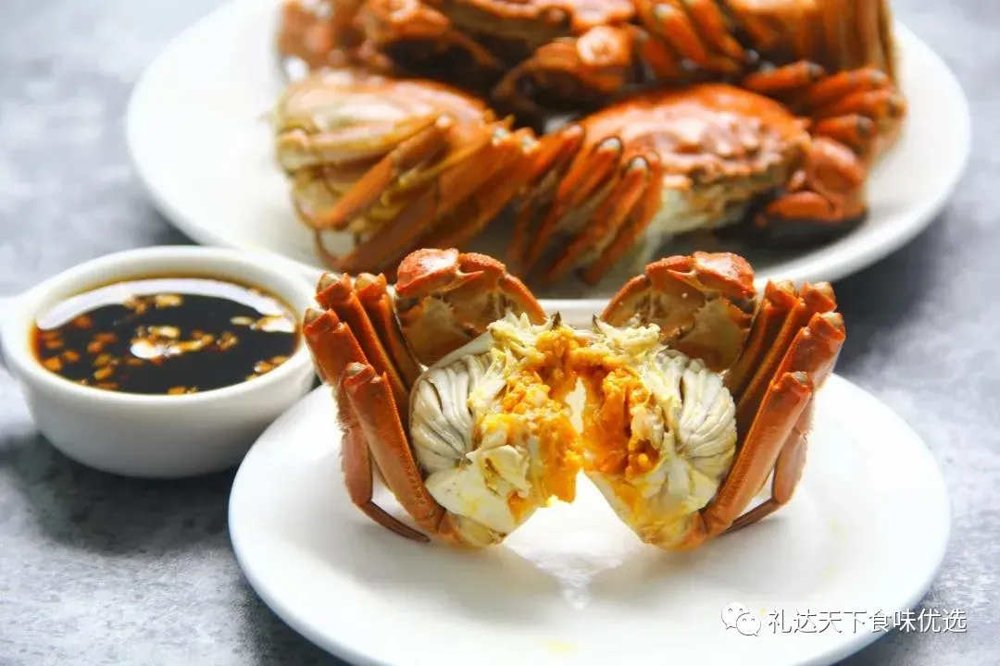

黄河口大闸蟹：一口下去绵软鲜甜，回味无穷
发布时间: 2023-04-11 4859 次浏览
-
“蟹是美味，人人喜爱，无间南北，不分雅俗”
欧阳修说，“是时新秋蟹正肥”，秋季快到了 ，又是一年吃蟹的季节。
吃蟹先掀盖，蟹壳里的蟹黄经过热加工后变得无比饱满有弹性。凸起的蟹黄都快扑了出来，一口下去唇齿之间瞬间被蟹黄裹得严严实实，鲜到舍不得吞咽下肚。
蟹身里的蟹黄更是呼之欲出，垂涎欲滴。雄蟹满满都是蟹膏，任由它在舌尖掀起一阵腥风血雨，却是回味无穷。
鲜香的蟹黄多到流油，顺着蟹肚流到指缝。绵软黏糯的膏、黄一抿即化，细细品来，舌尖鲜香回味无穷，更有一丝清甜的余味在口中久久不散。更妙的是，即便刚才双手上阵地“武吃”，剥完蟹壳蟹腿的手上也不带半点腥味，反而留有淡淡的蟹肉余香。
黄河口大闸蟹自带甜味，蟹黄、蟹膏和白白嫩嫩的蟹肉在唇间铺天盖地的绽放，舌尖上的鲜甜久久不会散去。
《清禆类钞》这样记载河蟹中的北蟹，团脐之黄，则北蟹软而甜，若来自南者，硬而无味，远不逮也。700余天超长生长期，每一只蟹都经历20次变化，4次脱壳蜕变，最终养出了色泽鲜亮，壳硬肉饱满，蟹膏嫩滑的鲜净好滋味。
蟹的美味可口，是众所周知的。而这美味可口来自于蟹的营养价值，具有舒筋益气、理胃消食，通经络、散诸热、散瘀血之功效。
黄河文化旅游宣传平台
联系电话: 17753010787
版权所有：山东大学技术团队
技术支持：山东大学技术团队